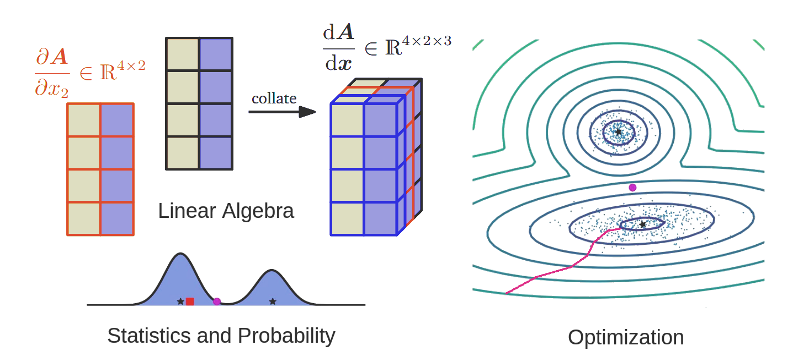
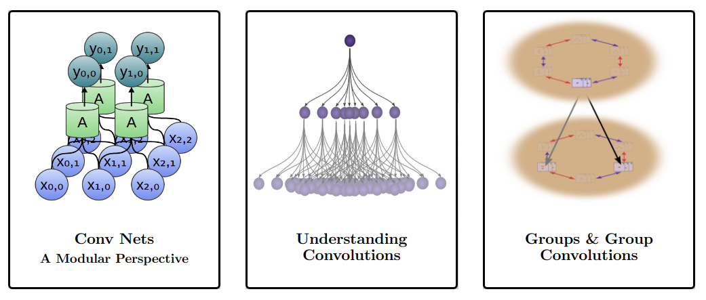
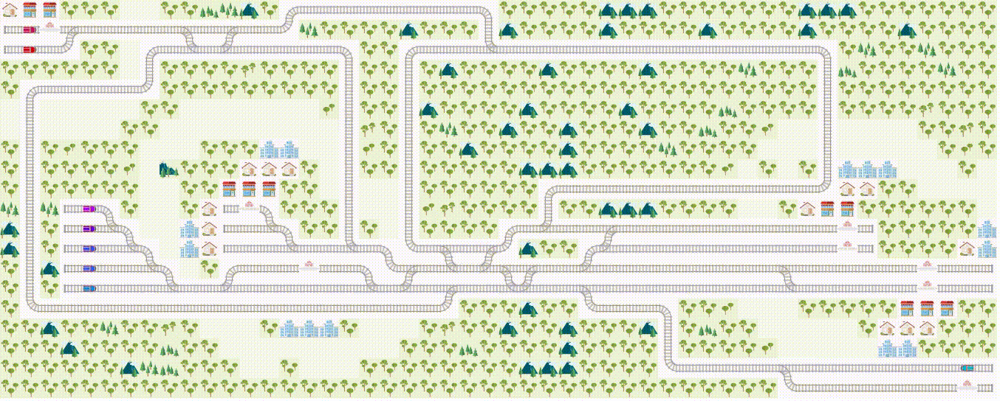

README: This letter presents a self-contained learning path to build the foundations of deep learning. It is aimed at advanced undergraduate students interested in graduate studies or in cutting-edge technology R&D. Since this letter is based on my (limited) personal experience with the field, it is open to experimentation and scrutiny. I hope that this letter will help you in getting started. You may revisit it at different stages of your studies and absorb the materials in incremental levels of understanding. All the best! Get, set, click !
Deep Learning1 is at the cornerstone of modern machine learning methods in fundamental sciences2 and information technologies3. The interest in the field resurged in the last decade and drove significant breakthroughs4 in the design and development of learning algorithms, network architectures, and hardware accelerators. These developments are enabling complex tasks5 in visual perception and recognition, natural language processing, machine translation, conversational systems, agent-based modeling and control, autonomous vehicles, and robotics. The theoretical foundations6 of deep learning also continue to evolve and probe deeper issues such as explainability, expressiveness, and generalization. The computational model of deep learning intersects a diverse range7 of disciplines such as biology, neuroscience, information theory, quantum computing, and geometry. As a result, deep learning is a vibrant field of study. Researchers try to solve challenging problems, applications act as feedback to research, and the field is pushed further into discovery.
However, this super-exponential rate of progress can inundate undergraduate students with its underlying complexities. For example, the essence and implications of GPT3 (hyped)1 and BigBird2 can only be appreciated if you have a clear understanding of the fundamentals and insights about advanced concepts like language models and transformers. I have faced this issue in the initial period of my learning as I was mostly dependent on self-study. After a modest experience in the field, I have tried to chart the roadmap for an accessible deep learning course where the learning curve starts from bare fundamentals and touches the arc of state-of-the-art research. It covers basic mathematics, foundations and theory, implementational aspects, and advanced applications. Through this learning path then you could arrive at the frontiers of deep learning research in about six to ten months. The outline is (i) prerequisites, (ii) textbooks, (iii) courses, (iv) research papers, (v) implementation, (vi) exploratory reading, (vii) advanced frontiers, and (viii) executing research.
Prerequisites: The fundamental set of prerequisites1 is (i) applied mathematics: linear algebra, calculus, statistics, probability theory, information theory, numerical computation, optimization; and (ii) computing: programming, algorithms, data structures, systems, computer architecture. Since deep learning is a particular class of machine learning algorithms, it is necessary to understand its broader algorithmic framework. The basic mathematical foundations are covered in Deisenroth’s MML textbook (2020), and the basics of machine learning are covered in Osvaldo Simeone’s monograph (2018) and Alex Smola’s book (2008). Proficiency in deep learning frameworks2 like TensorFlow or PyTorch is required for building high-level abstractions and a basic understanding of hardware3 is useful for building large-scale deep learning systems. As you delve deeper, more specialized set of prerequisites will emerge. In my experience, self-learning is highly distributed, iterative, and nonlinear: you should start now with minimal functional knowledge and keep learning incrementally.

Tensor operations, backpropogation, nonlinear optimization, ... [graphic adaptation: MML textbook]
Structured learning: At this point, you might have a high-level overview of deep learning. The next step is to systematically understanding its fine details. The textbook Neural Networks and Deep Learning (2018) covers the theory of modern deep neural networks, learning algorithms, standard neural architectures, issues in training deep networks, recent developments in variational autoencoders, attention mechanisms, generative adversarial networks, neural Turing machines, and deep reinforcement learning. It also discusses some less-prevalent architectures such as radial basis function networks, restricted Boltzmann machines, and self-organizing maps. The seminal textbook Deep Learning (2015) covers chapters about linear factor models, representation learning, probabilistic models, and generative models. Reading the book(s) cover-to-cover will build a concrete foundation and you may (i) solve exercises, (ii) implement algorithms (d2l.ai), and (iii) start reading research papers. As a documentation exercise, you can write blogs (Seita) on textbook summaries.

You will learn about various architectures and their applications to different problems [source: neural-network-zoo]
Courses: Hugo Larochelle’s course (2013) builds a solid theoretical foundation. Yann LeCun’s course (2020) covers the latest techniques in supervised and unsupervised deep learning, embedding methods, metric learning, convolutional and recurrent nets. Stanford’s tutorials cover computer vision (2017) and natural language processing (2019) in depth. MIT’s introductory course (2020) extends the coverage to fascinating topics such as domain adaptation, neural rendering, and neurosymbolic hybrid systems; and John Canny’s course (2016) covers practical issues in training deep networks and distributed deep learning. Sergey Levine’s deep reinforcement learning course (2020) and Pieter Abbeel’s deep unsupervised learning course (2020) comprehensively cover the subfields. I would strongly recommend you to look through all these courses as they discuss ideas beyond the scope of textbooks and create a bridge to the latest research directions. Alongside, you must also build a course project (CS230) that applies deep learning to a real problem and incorporates the end-to-end machine learning pipeline. This exercise is your first fitness test for further research.
Reading research papers: The standard (academic) procedure to acquire knowledge about a specific topic is to read a sequence of connected references until you reach the first principles. Reading papers is an excursion into the minds of scientists. You can connect to a diverse range of problems, learn different approaches to tackle them, assess the relevance of a particular solution, and build a mental model to implement it. Since deep learning literature continuously expands1 in breadth and depth, you must adopt a targeted approach2 to reading: (i) select a researcher or a subdomain, (ii) start with landmark papers3, and (iii) keep track of ‘state-of-the-art’ developments. Communities such as paperswithcode, arxiv-sanity-preserver, paper-reading-club, and conferences such as NIPS, ICLR, AAAI, ICML are the definitive resources. You can document your learning with detailed notes, write monographs or explanatory articles, and communicate your knowledge by teaching others. This will enhance your conceptual understanding and refine you as a researcher.
You can read research papers, study their source code, and create your own experiments [source: paperswithcode]
Implementation: Programming is crucial as you traverse through the textbooks and courses. This includes the implementation of core algorithms to build a conceptual understanding, experimentation with various frameworks that provide high-level abstractions and functionalities, and building resource-optimized end-to-end systems. The companion reference for this exercise is (i) the codebook Dive into Deep Learning and (ii) the course Deep Learning from the Foundations. It recreates the fast.ai course from scratch. This practice strengthens your algorithmic fundamentals and exposes you to practical issues such as optimization choices, convergence problems, stability of networks, and hardware constraints. Next, you can start implementing research papers. Along the way, it is highly advantageous to produce useful open-source contributions.
Visualizations: As the complexity of neural networks increases it becomes challenging to describe their representations, computations, optimization landscapes, nonlinear activations, concept hierarchies, and so on. Interactive simulation tools for neural networks, computation graphs, binary classification, convolutional networks, recurrent networks, generative networks enhance conceptual understanding. You can visualize deep architectures in the implementation of learning algorithms. To that end, graphic tools like sensitivity masks, attribution graphs, dataflow graphs, embedding projector, and seq2seq-vis are driving the visual exploration of deep neural networks and are augmenting research in model interpretability and explainabile machine learning.
Simulations of a neural network computations [source: playground.tensorflow]
Explanatory blogs: State-of-the-art research sometimes involves techniques that are difficult to absorb and assimilate as an undergraduate student. For example, the related mathematics could be opaque or the central ideas could involve concepts from interdisciplinary domains such as physics or neuroscience. In such cases, you should read explanatory blogs that deconstruct and simplify complex ideas into transparent and accessible ones. Some of the ones I have found to be particularly useful are colah, distill, gradientscience, offconvex, losslandscape, explained, jalammar, depthfirstlearning, inference, r2rt, lil-log, echen, adit, shapeofdata, minimizingregret, argmin, syntropy, astroautomata, two-min-papers, arxiv-insights, and reddit. The explanations, analogies, and visualizations presented in these blogs are resourceful in building deep insights and intuitions about relatively abstract concepts as described in the standard literature. Write your own!

“I want to understand things clearly, and explain them well.” [chris olah]
Exploratory reading: As time evolves, scientists and engineers are investigating new and interesting ways in which deep learning can approach extremely complex problems. An effective way of discovering such research and understanding its implications in a particular technology domain is by reading research expositions from DeepMind, Google, OpenAI, FAIR, Nvidia, IBM, ML@Apple, Microsoft, Amazon Science, Phys.org; academic departments such as BAIR, OATML, MILA, ML@CMU, SAIL, CSAIL, CBMM; thought leaders from academia and industry. This practice keeps you informed about the thought process of leading groups in the field and also exposes you to the problems that are being studied extensively. Progressively, it builds a mental model for research.
Competitions: Contests have channeled various breakthroughs in the field. The representative example is ILSVRC 2012 that revolutionized the field of computer vision and lead to an active research interest in CNNs. Several universities and academic departments; machine learning conferences such as NeurIPS, CVPR, AAAI; platforms such as codalab (web) and chalearn (web) host challenges to solve specific problems across various research and application domains. Some challenges also drive the improvement of performance benchmarks on a specific class of tasks or datasets. For example, you can survey the autoDL (2019) contest based on images, text, speech processing, semi-supervised learning, knowledge discovery, and graph representation learning.

Reinforcement learning approach to solve train scheduling by creating grid world environment [source: Flatland Challenge]
Advanced courses: As you build foundations with textbooks and introductory courses, you may visit some graduate-level courses for motivation. This includes Bruna’s course (2016) on statistical and computational aspects, Duvenaud’s course (2016) on differentiable inference and generative models, and Donoho’s course (2019) on analyses of deep learning. The integration of systems engineering with deep learning is covered in Jamshidi’s course (2020). Fortunately, universities offer special courses such as STDL (2019, 2018, 2018, 2017), CV (2019), NLP (2019), STDL (2019), CU (2017), DM (2017), IITB (2019), USC (2020), ATML (2020) that focus on cutting-edge research themes. These courses combine reading materials, seminars, and guest lectures. The contents of these courses might not be accessible at the first glance but will immensely expand your knowledge base in successive shots. This is exactly what you need to transform yourself from a naive (undergraduate) student to a serious researcher. This exercise will also prepare you for graduate coursework.
Advanced frontiers: As you build a foundation for research, you will observe that ‘state-of-the-art’ in deep learning is a moving target and new developments in computer vision, natural language processing, bioinformatics, speech systems, and robotics are constantly on the horizon. The phenomenal interest in the field has given rise to learning techniques such as transfer learning, self-supervised learning, Bayesian deep learning, domain adaptation, and adversarial examples. Methodologies such as neural architecture search, metalearning, autoML, and model compression have been developed. Deep learning on graphs and geometric deep learning have created new concepts in computer graphics modeling. Generative models are finding applications in art and music. Reinforcement learning is revolutionizing game-play such as Go, Atari, Chess. The trends in hardware developments have evolved and specialized processors such as GPUs, TPUs, and IPUs are enabling deep learning at scale. Quantum computing and neuromorphic computing are reinventing the computational models of neural networks and propose potential hardware systems as well. The integration of systems and deep learning (MLSys) has introduced concepts such as hardware and software co-design, edgeML, and privacy preservation. The explosion of interest in the field, availability of compute resources and big-data, algorithmic advancements, and the emergence (engineering) of ubiquitous applications is pushing deep learning at an unprecedented pace.
Find your place: Self-learning is learning in a closed loop: you can build a solid foundation, but executing actual research will significantly depend on supervision and collaboration. For this, you need to identify the people involved in the area of your interest and connect with them. The first step will be natural as you explore the field. You must try to visit conferences, seminars, colloquia, symposiums, workshops, tutorials, and webinars. These events have a wide representation of researchers in diverse fields. You may connect with graduate students from academic departments of your interest and build a mentor-to-mentee relationship; it is crucial for building a focused, effective, and meaningful learning experience. Next, you can connect with professors or R&D scientists and discuss your research ideas with them.
Execute research: Once you have developed a sufficient technical base, you should participate in pushing the boundaries of deep learning. The nature of research can be application-oriented, experimental, theoretical, or algorithmic. You can build network architectures, find new methodologies in domain-centric applications, improve benchmarks, prove theoretical bounds, and so on and so forth. For this, you can join a research group as a resident or intern, for summer or winter schools, for senior thesis, or simply as an academic visitor. The aim is to build real experiences with real people and real problems (and come up with solutions). As evident, modern deep learning research spins out of highly collaborative efforts between the industry and academia. As a future graduate student, you may pursue a Masters or PhD internship at Big-Tech firms or deep-tech startups; or as an industrial researcher you may collaborate with universities; it’s your choice. As a starting point: (i) work hard, (ii) build fundamentals, (iii) connect with people, (iv) apply for open positions, (v) get selected, (vi) try solving problems; (vii) repeat!
Interdisciplinary learning [OPTIONAL]: The foundations of deep learning are built on applied mathematics with direct inspiration from neuroscience, electrical engineering, and physics: the field itself is the result of interdisciplinary exploration. Modern deep learning is transforming applications across several disciplines and driving scientific practices such as computational models of cognition inspired by artificial neural networks, creating three-dimensional astronomical imagingg of galaxies, optimizing chemical pattern predictions in computational chemistry, and using reinforcement learning for quantum error correction or quantum control. Through my personal experience, I have come across beautiful examples of deep learning’s interplay with physics, mathematics, and biology; and this has deepened my fundamental scientific thinking. For example, one of the domains I am currently researching is approximately solving combinatorial optimization problems through variational quantum algorithms and through quantum-inspired classical algorithms. It turns out that the maximum-cut problem can be approached through (i) probabilistic methods based on graph neural networks; (ii) reinforcement learning; (iii) quantum approximate optimization algorithm, (iv) evolutionary algorithms, and (v) traditional algorithmic techniques. Similarly, the protein folding problem can be approached through (i) distance modeling by deep learning, (ii) transformer-based language modeling, (iii) variational quantum eigensolver, (iv) quantum walks, and so on. Physics-informed deep learning systems augment AI research and geometry-inspired graph neural networks solve condensed matter systems and electronic structure problems. It is an interesting aspect of research and all intersecting disciplines drive each other forward. This symbiosis may encourage you to learn fundamental sciences alongside information and computing sciences.
Remarks: This letter aims to be the first introduction to research aspects of deep learning and does not include many important developments, research tracks, and applications. As you progress through the field and explore further, you will discover many fascinating ideas within and beyond deep learning. This letter does not also cover the issues within deep learning, such as the nature of intelligence, theoretical inconsistencies, interpretability; and practical issues such as privacy preservation, bias, AI ethics, or compute requirements and energy efficiency. However, these issues need to be addressed† in research. Connecting to the evolution (history) of deep learning is important to understand why certain architectures were needed and how people started thinking about them. It should also be emphasized that other machine learning techniques are of primal importance in research as well as in practical applications. You must cover machine learning in its entirety for a holistic understanding. An important point to consider is that this letter significantly differs from the applied and production-level aspects of deep learning such as software engineering, cloud deployment, or system design. However, interested students can refer to the fullstackdeeplearning course for related techniques.
‘‘Don't minimize mistakes. Minimize repeat mistakes. Fail in new ways and learn.’’
― @lexfridman
Endnotes: All the resources referred in this letter are free, open-access, and available online; one single exception is the Springer textbook (2018) that is free only via an institutional access. If you are actually interested in following through this letter and need help, please get in touch at lakshya@abstractions.dev. I will try my best to help you. Please share this letter with interested students. Have a deep learning !
Please provide your valued feedback, suggestions, comments, or criticism via filling this feedback form. If you are interested in recieving future communications (blogs) from me about computer science, please subscribe. I will write mainly about machine learning and quantum computing. I look forward to connecting with you!
Thank you for your visit. This article is written by Lakshya Priyadarshi